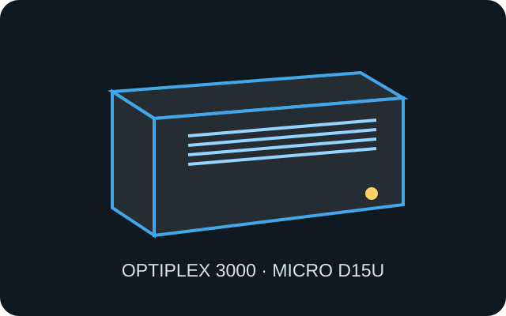

[ IDENTIFIED SYSTEM // DELL MICRO ]
Dell OptiPlex 3000 Micro
Regulatory model D15U, Type D15U002; 182 × 36 × 178 mm (H × W × D). Confirm exact optional I/O and adapter configuration by service tag.

MODEL / TYPE: OptiPlex 3000 Micro D15U002; not the 3000 SFF or tower variant.
Specifications & fit
| Dimensions / type | 182 × 36 × 178 mm (H × W × D), Micro Form Factor business desktop. |
|---|---|
| Board / power | Dell proprietary system board and chassis; external 65 W or 90 W Dell adapter by configuration. Not compatible with ATX power or standard PCIe cards. |
| Drive bays | One M.2 2230/2280 storage position and an optional 2.5-inch SATA drive with the correct caddy and cable. |
| Expansion | No full-size PCIe slot. M.2 2230 is used for wireless; selected rear configurable I/O modules add connector options, not internal card clearance. |
| Thermal / maintenance compatibility | Keep side and rear ventilation clear; the internal blower/heatsink and drive carrier are model-specific. Remove the external adapter before service and follow Dell’s cover and component sequence. |
Compatibility & preservation notes
Use the service tag and D15U manual to identify board, WLAN, power, port module and drive-cage variations. The Micro chassis does not accept ordinary desktop expansion cards.
- Retain the correct SATA cable, 2.5-inch bracket, bottom cover, screws and stand/VESA accessories.
- After cleaning, verify that fan and heatsink are seated correctly and that the ventilation openings are not blocked by a mount.
Manufacturer specifications & service sources
- Dell Support — OptiPlex 3000 Micro manuals and documentsManufacturer landing page for service and setup documentation.
- Dell — OptiPlex 3000 Micro Setup and SpecificationsDimensions, power, storage and configuration-specific system details.